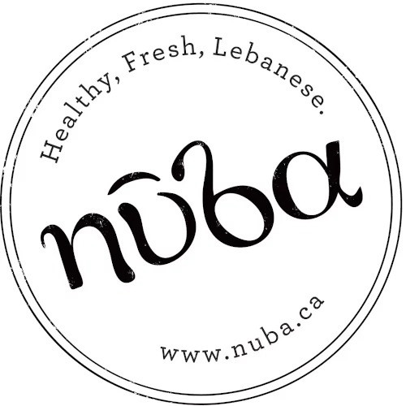

Explore my past and current experiences by clicking on the timeline bars below:
My First Job

Ah, my first job ever.
First of all, I'm glad you've read this far into my past.
And in hindsight, I learned a lot about work and about myself serving up Lebanese food a few blocks from the Downtown Eastside.
I enjoyed the challenge throughout the never-ending night shifts.
I learned a lot about working with a team and working under pressure.
On a busy night there's little room for error, so keeping tight communication with the kitchen was key.
Despite the pressure, I had to make sure all orders looked immaculate and followed the diners' dietary requests.
You could say this adds to my quality and testing experience -- except that I couldn't taste test a guest's hummus.
Studying Computer Science
Summary
- Carleton University, Bachelor of Computer Science, B.C.S Honours
- Graduated in 2018 with Distinction & Co-operative Education
- Deans’ Honour List 2015, 2016, 2018
- Major GPA 3.9 / 4.0
More Details
In April of 2018, I graduated with distinction with a Bachelor degree in Computer Science program.
In the four years I spent there, I hit the Deans' honor list on three years.
I'm grateful for the four semesters of co-op experience I gained during that time, which rounded out my education.
Throughout my university career, I was committed to enrolling in the more interesting courses despite their difficulty.
In hindsight, these are the courses that taught me the most:
-
Design and Analysis of Algorithms II
-
Algorithms for Modern Datasets
-
Intro to Machine Learning
-
Artificial Intelligence
Then in my final year, I worked on my undergraduate honors project.
For my honors project, I developed a code execution engine that securely executes foreign, user-submitted programs.
The engine also verifies the programs' correctness and supports multiple languages.
This engine now backs Project Lovelace.
Head over to the projects section for more details.
Slinging Tacos on the Weekend
Every Friday and Saturday night at El Camino was a busy night.
I enjoyed it and my co-workers were fantastic people.
I grew a lot and learned things you'd probably never learn in the software world.
Have you ever tried delivering two dozen tacos on a shared plate to 10 drunk people crammed in a booth and explaining whom each taco belongs to?
I can project my voice so well, and that's handy in a heated office Nerf gun battle.
Building on my experience at Nuba, I got even better at multi-tasking.
My role was the bridge between the kitchen and the front.
As the only support staff on those busy nights, I had to coordinate with the servers, bartenders, cooks, and dishwasher to make sure the entire restaurant was running smoothly.
Near the end of my time there, I was training new people.
Working with guests also helped me gain invaluable customer service skills.
I've learned to anticipate guests' needs before they even think to ask.
In hindsight, these customers service skills have helped me greatly during my time in software desk jobs.
Tutoring on the Side
Summary
- Independently tutored Computer Science students at Carleton University.
- Customized my teaching approach to provide an effective and personalized learning experience.
- Prepared session material in response to students' learning styles.
More Details
Once I realized I was doing well in school and in need of money, I decided to do take initiative and start tutoring.
I designed a poster with Photoshop, made copies at the university print shop, and made good use of my staple gun.
Having dozens of posters around campus brought a steady stream of clients.
I customized my session prep and teaching style based on my client's needs.
After all, tutoring a computer science student in discrete structures is different from helping an engineering student cram for his midterm.
Tutoring my clients kept me afloat until I became a teaching assistant.
Well, the co-op income also helped a lot in paying my tuition and rent.
Early Beginnings
Summary
- Automated end-to-end tests that used to be executed manually, saving hours of time for the team.
- Investigated, fixed, and tested production bugs in network management software with Java and JUnit.
- Executed dozens of complex manual regression test cases and reported discovered bugs.
More Details
I consider this co-op placement my career warm-up before moving on to bigger and greater things.
For the first half of my term, I manually executed test cases for Ciena's legacy network management product.
Nothing makes you appreciate automated testing more than that.
In the second half, I fixed production bugs and wrote automated (thankfully!) tests.
I also learned to file bug reports so detailed and beautiful they bring a tear to even the most hardened developer's eye.
Learning & Earning
Summary
- Independently tutored Computer Science students at Carleton University.
- Customized my teaching approach to provide an effective and personalized learning experience.
- Prepared session material in response to students' learning styles.
More Details
I applied to be a teaching assistant (TA) for the rent money, but I stayed for the experience.
The passion for teaching I acquired from being a private tutor continued to grow in my TA experiences.
Overall, I ended up being a TA four times for the following courses:
-
Computer Science Teaching Assistant Center (1st and 2nd years courses)
- Introduction to Software Engineering (2nd year course)
- Operating Systems (3rd year course)
-
Design & Analysis of Algorithms I (3rd year course)
I'm especially proud of that last one, because "the algorithms course" is notorious for being the most difficult mandatory computer science course at Carleton.
Full-stack at a Startup
Quality data warehouse dashboard
Delta bar chart

Typical stacked bar chart
Horizontal stacked bar chart
Multi-line chart
Summary
-
Implemented a data warehouse solution with several ETL scripts for Jira data with Python and PostgreSQL.
This solution was also designed to be extendable in the future to other data sources like SonarQube and test results.
- Developed a dashboard web interface for the data warehouse with 12 interactive charts using D3.js.
- Created and optimized 30+ SQL queries that ran hourly to aggregate new data from Jira.
- Designed and implemented a test automation framework for a product component using
Bash and PowerShell.
My Favorite Co-op
This was my, by far, my favorite placement because I was truly doing full-stack development.
I was fiddling with the database, implementing test frameworks, and creating beautiful visualizations with D3.js.
The fun started with my first project, which had me implement a data warehouse solution for the quality team.
The Data Warehouse
I wrote ETL scripts in Python that captured hourly snapshots of the Jira instance to load into PostgreSQL.
At the database level, I created and optimized dozens of SQL queries and triggers that aggregated new data.
These aggregate views were in a format that could be visualized easily.
Visualizing the Data in a Dashboard
With the back-end done, I shifted to the front-end.
The objective was to provide visual reports on defects, trends, and project status in one dashboard.
To achieve that, I developed a web interface that consisted of 12 interactive D3.js chart visualizations.
The dashboard allowed users to filter the data in different ways, allowing management to easily discover product quality insights.
Developing a Test Framework
After completing that project, I shifted gears to the team's fork of Apache Flume.
The problem was that this component was being tested manually every release.
To save QA time, I designed and implemented a test automation framework from scratch.
Part of the challenge was having to simultaneously develop a Linux (using Bash) and Windows (using Powershell) version.
Both of them had to behave exactly the same and be compatible with the same test files, of course.
The new framework allowed the QA team to save hours of manual labor by automating their manual test cases.
Taking Initiative
Summary
- Implemented significant network management features and created automated unit and integration tests.
- Rewrote the team's test runner to parallelize test execution, reducing runtimes by 66% to 30 minutes.
- Solved major production bugs in my team's micro-service, allowing the team to meet a tight deadline.
New Challenges at Ciena
I returned to Ciena in 2017 to work in a new division that was building the next-generation network management product.
I experienced working as though I were a full-time developer, and had an excellent mentor teach me a lot of software development and team dynamics.
Speeding up the Test Runner
Early in my eight-month term, I noticed that the test framework took a long time to run.
This framework was a tool custom-built in Python by the team to run different kinds of tests involving the team's micro-service.
I realized that we could save loads of time by running most of the tests in parallel, but the team wasn't convinced it was possible.
To counter their reservations, I built a proof-of-concept that proved it was indeed possible to parallelize the framework.
With their blessing, I spent a couple of weeks on a full re-write of the framework.
After merging my changes, the team enjoyed test runtimes that were faster by about an hour!
Whereas a test run previously took an hour and twenty minutes, with my improvements that time was down to 30 minutes!
Production Feature Work
Having proved myself with my work on the test framework, I started working alongside the team on feature work.
I took on the responsibility of implementing core product features for the micro-service.
Part of that was developing my suites of unit and integration tests, some of them developed in TDD style.
I also helped the team meet tight deadlines by solving major production bugs.
I concluded my term having successfully shipped a notable feature that was directly requested by customers.
Exploring Our Canadian Backyard
My road trip route — click to see it in Google Maps!
After graduation, I decided to take a short sabbatical and unwind before jumping back into the software industry.
I set off from Ottawa and headed north-east.
I passed through all the eastern provinces, seeing friends, camping out, and crashing at dinky hostels.
Once I made it to New Brunswick I met up with my brother who made his way up on his motorcycle.
We visited Prince Edward Island together before heading down to Boston together.
I ended my trip when I had to return back to Ottawa for my graduation ceremony in June.
An Unforgettable and Rewarding Summer
With summer in full swing, I made my way to Muskoka to work at a kid's camp.
Camp Winston is an overnight summer camp for children with multiple neurological disorders like autism, obsessive-compulsive disorder, and intermittent explosive disorder.
The time I spent here was incredibly rewarding and will stay with me as long as I live.
At the camp, I was a full-time counselor working with groups of 4-5 campers for two weeks at a time.
During these two weeks, we would help the campers learn new skills like learning to ride a bike or tying their shoelaces.
We would also work on building up their confidence, self-esteem, and social skills.
We would also support the campers through difficult and emotional episodes, coaching them and helping them process difficult emotions.
In addition to my regular duties and responsibilities, I was also a ropes instructor.
I received high ropes training that allowed me to facilitate the roped adventure activities at the camp.
Not only did this match my love for rock climbing, being a ropes instructor meant being one of the coolest counselors in the kids' eyes.
Full time at Kinaxis
Summary
- Led a brand new team through the release of its first feature, yielding a rapid promotion to Advisory.
- Acted as quality lead for several visualization projects and maintained a defect escape rate of 1-2%.
- Awarded a patent for co-inventing the innovative Timeline visualization for supply chain management.
- Created intuitive Selenium and TestCafé-based test frameworks with functional and integration tests.
- Mentored junior team members on software development and testing practices.
- Set up CI/CD pipelines for the team's unit and integration tests through Jenkins.
- Directed the migration of 100+ tests from JUnit to TestCafé.
Highlighted Projects
Network Visualization
Visualizing a bill of materials
Soon after joining Kinaxis I took the opportunity to join an exciting new team.
Our objective was to create innovative new ways to visualize supply chain data.
For our first project, we designed and produced a generic graph-based visualization.
As the only test developer, I was solely responsible for quality.
The visualization had over a dozen dimensions of configuration.
Being so configurable and flexible made the feature a challenge to test.
Each sub-component could interact with other sub-components, so I have to be thorough in my testing.
To that end, I set up a test framework and automated nightly builds along with a comprehensive suite of component and integration-level tests.
In the process, I instilled a deep appreciation for testing across the team.
We started catching defects earlier in the development cycle and completely preventing regressions.
Using a dashboard in Jira, I created viz quality metrics that we could follow to gauge our quality level.
We went from having no tests to merging unit and/or integrations tests in every pull request.
By the end of the project, it turned out that I had caught a whopping 73 bugs.
Check out the
press report
from when we released this feature.
Timeline Visualization
Visualizing supplies and demands on several products
Later on I worked on the Timeline visualization project.
It was for this feature that I was named one of the co-inventors on the patent.
On the test side, I sought to continue upping the team's quality bar.
Noticing that we need more user involvement, I championed and personally facilitated two internal beta programs to test our assumptions and sharpen our designs.
I'm proud of how the beta program resulted in improving our understanding.
We completely re-designed the feature thanks to the feedback we got in the beta.
The re-design ended up vastly improving the power, usability, and long-term extensibility of the visualization.
Outside the team, I evangelized my team's visualizations to internal audiences.
I relied on different methods to achieve this.
First, I relied on my internal network and spread awareness through word of mouth.
Second, I presented keynote presentations to large R&D audiences.
This effort not only brought more feedback to our work.
It also allowed me to help others with their jobs.
For development and support teams, this meant helping them visualize and better understand supply chain data.
For customer-facing sales and consultant teams, this meant spicing up their demos by showing off the new visualization capabilities.
Growing the Team
Throughout my time at Kinaxis, I was always keen on building the best team possible.
A few months into joining the team, I saw the opportunity to fill the scrum master role.
I took it on because I could see the team was functioning haphazardly and needed better processes.
A few months later, our improved reporting, communication, and planning made us more predictable and allowed us to get much better feedback from stakeholders.
As we grew the team I participated in interviewing and hiring junior members.
I thoroughly enjoyed mentoring new members on both sides: developers and testers.
I helped fill gaps in their software development knowledge, as well as testing principles and test framework design.
In the past year, the team I helped build has been delivering on all projects on schedule.
All without sacrificing quality.
CI/CD
As I mentioned earlier, I set up the CI pipelines that our new team needed during the Network visualization project.
I got our new tests running in nightly builds, assuring us we have no regressions.
During the Timeline visualization project, I implemented running tests in CI on our pull requests.
This further helped us keep a clean master and save time for developers.
More recently, I integrated the team's repositories into SonarQube for static code analysis to prevent code smells and security vulnerabilities.
Working Remotely
When the pandemic forced the team to go remote, I got creative to keep us going.
Realizing that written documentation is even more important now, I ensured our team processes and onboarding were clear and well-documented.
I also organized regular coffee time and online games (our team loves Jackbox!) to help the team have fun and stay connected.
Today, we're still going strong despite spreading out to
3 different time zones!
Teaching Experience
The opportunity to teach and mentor is something I cherish in my work.
I love taking someone from "what?" to the "aha!" moment where the pieces fall nicely into place.
That's why I'm keen on working at places that foster mentorship and learning.
Why do I include non-software experience?
The longer I work in the software industry, the more I learn that communication, collaboration, and general people skills are key to good software development.
To that end, I proudly list my non-software experience because I believe that soft skills are as necessary as technical skills when tackling big challenges as a team.
I've discovered that these experiences have helped me immensely in collaborating as part of a team and in taking the lead and bringing others on board.